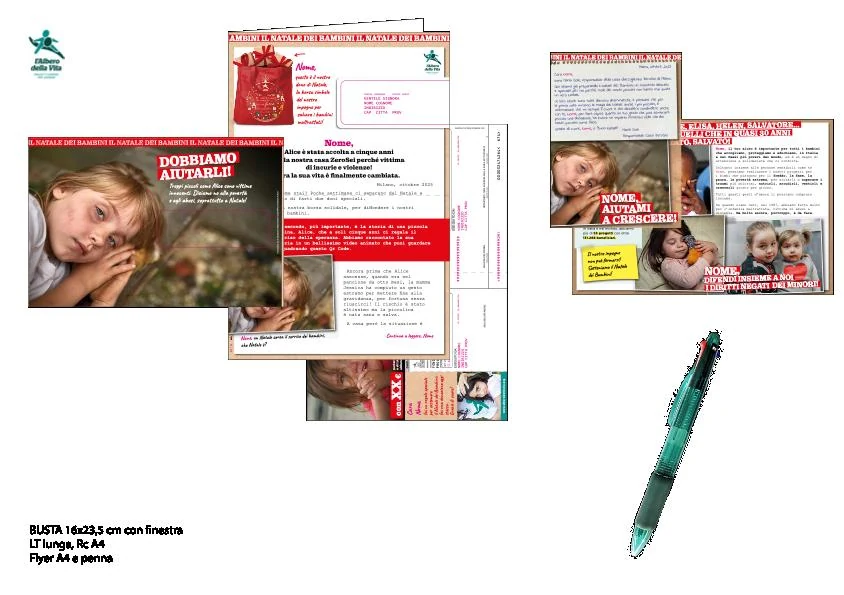
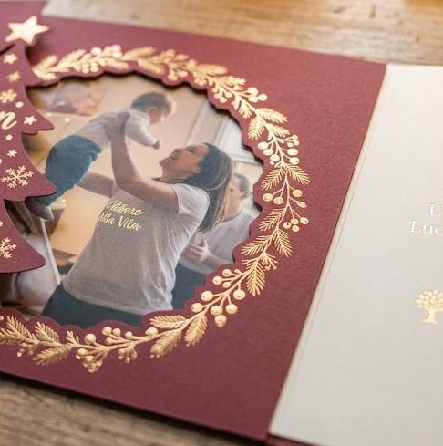
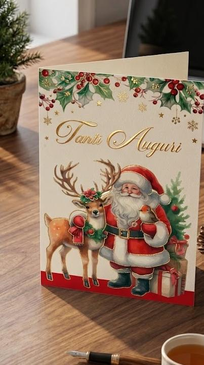
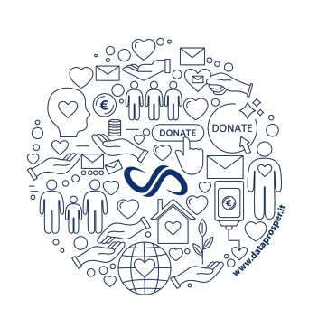

Le campagne recenti
Natale 2025 e 5×1000 2026 hanno registrato volumi di risposta e tassi di conversione inferiori agli obiettivi.
Performance sotto le attese
Una strategia di multitesting controllato per rilanciare le campagne di direct mailing e superare i risultati di Natale 2025 e 5×1000 2026.
“Non sempre cambiare equivale a migliorare, ma per migliorare bisogna cambiare.”Sir Winston Churchill
Le ultime campagne indicano che non basta cambiare un gadget. Serve una struttura capace di isolare le variabili, imparare da ogni invio e correggere la rotta sulla base dei dati.
Natale 2025 e 5×1000 2026 hanno registrato volumi di risposta e tassi di conversione inferiori agli obiettivi.
Due lotti da 50.000 pezzi, stessa creatività e solo il gadget come variabile: se il messaggio non risuona, l’intero mailing fallisce.
Testare più elementi sullo stesso progetto 0–6 per attribuire correttamente i risultati a gadget, creatività e composizione del pack.
Cresce la complessità operativa, ma cresce soprattutto la capacità di capire cosa muove davvero la risposta del prospect.
Non una complicazione tecnica, ma un laboratorio controllato. Cinque lotti testano variabili indipendenti e trasformano ogni risposta in conoscenza utile per le campagne successive.
Un momento di scoperta memorabile che aumenta il coinvolgimento emotivo.
Gadget, messaggio e pack vengono misurati come variabili indipendenti.
Due narrazioni dello stesso progetto intercettano motivazioni diverse.
| Lotto | Quantità | Gadget / allestimento | Creatività | Obiettivo del test |
|---|---|---|---|---|
| 01 | 20.000 | Borsa | 2026 · Lia | Gadget 2025 + nuova creatività HM10BIS |
| 02 | 20.000 | Borsa | 2025 · Reverse test | Reverse test con creatività e gadget 2025 |
| 03 | 20.000 | Penna | 2025 · Reverse test | Nuovo gadget sulla creatività 2025 |
| 04 | 20.000 | Penna | 2026 · Lia | Nuovo gadget + nuova creatività HM10BIS |
| 05 | 20.000 | Pack Unboxing | 2026 · Lia | Verificare se l’esperienza ricca abbatte la barriera della donazione |
Il cuore dell’innovazione. Un Pack High-Engagement pensato per massimizzare la percezione di valore e la risposta emotiva del prospect.
La progettualità resta stabile; cambia il gancio emotivo. Il donatore viene accompagnato dal primo contatto alla percezione concreta dell’impatto.
Una comunicazione calda e speranzosa, focalizzata sulla costruzione del futuro e sulla tutela dell’infanzia.

Busta regalo, foto reali, flyer e biglietti con finiture premium: ogni elemento costruisce vicinanza e rende il donatore protagonista della storia.


Riutilizzare le liste già estratte per Natale 2026 rischia di replicare i risultati precedenti. La proposta prevede nuovi parametri, segmentazione per scenario e un ulteriore passaggio di deduplica.
I costi aggiuntivi di produzione, gestione e invio sono completamente a carico di DataProsper. Il budget PM 2026 della Fondazione non varia.
La finestra è stretta: per proteggere qualità e tempi produttivi, le attività devono procedere in sequenza senza perdere le milestone chiave.
Approvazione Scenario C, briefing Creative Unit e avvio creatività Progetto 0–6.
Presentazione creatività, approvazione Pack Premium e definizione stampa e fustellatura.
Approvazione pack completo, stampa dei cinque lotti e preparazione delle liste segmentate.
Imbustamento, controllo qualità e consegna a Poste Italiane.
Monitoraggio resi e risposte per lotto; primi dati disponibili per l’analisi comparativa.
DataProsper è pronta a supportare la Fondazione dalla strategia alla produzione, fino al reporting post-campagna.
Il cambiamento richiede coraggio.
Questo è il momento di agire.

Questa è una presentazione di DataProsper, sviluppata dal team a disposizione di Fondazione L’Albero della Vita ETS.